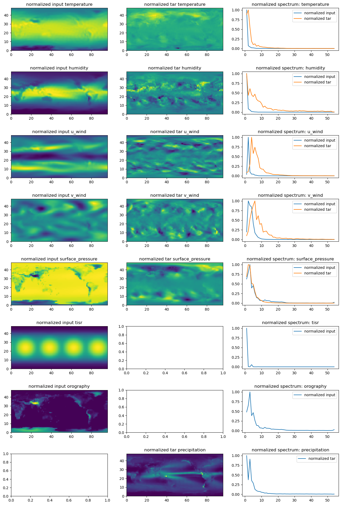
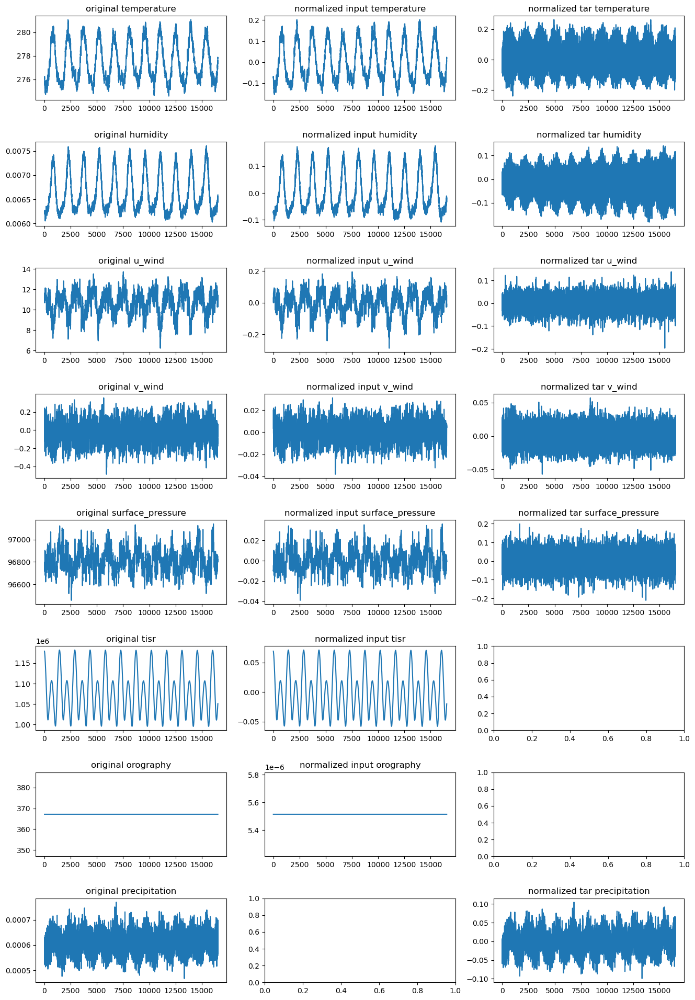
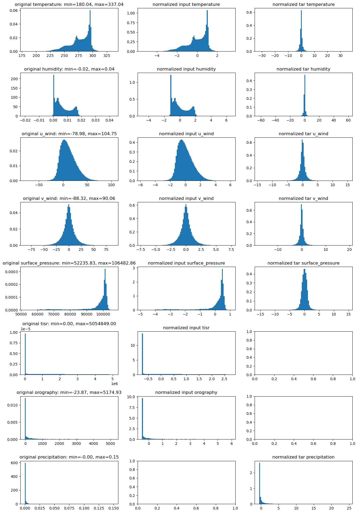

!module listCurrently Loaded Modulefiles:
1) openmpi/4.1.5 2) singularity 3) NCI-ai-ml/25.07 4) pbs Currently Loaded Modulefiles:
1) openmpi/4.1.5 2) singularity 3) NCI-ai-ml/25.07 4) pbs ['temperature',
'humidity',
'u_wind',
'v_wind',
'surface_pressure',
'precipitation',
'tisr',
'orography']temperature: mean=277.4626770019531, std=17.816375732421875
humidity: mean=0.006629979237914085, std=0.005532822106033564
u_wind: mean=10.695755004882812, std=15.56001091003418
v_wind: mean=-0.02342492900788784, std=12.149330139160156
surface_pressure: mean=96811.390625, std=9123.89453125
precipitation: mean=0.0006106931250542402, std=0.001604488817974925
tisr: mean=1079093.125, std=1444145.25
orography: mean=367.17120361328125, std=809.2915649414062data = np.load(f"{nb_dir}/datasets/era5_T30_preprocessed.npz")
data_inp = data["data_inp"] # input data
data_tar = data["data_tar"]
raw_means = data["raw_means"]
raw_stds = data["raw_stds"]
prog_means = raw_means[:5] # this is literally zero?
prog_stds = raw_stds[:5] # this is literally zero?
diag_means = data["diag_means"]
diag_stds = data["diag_stds"]
diff_means = data["diff_means"]
diff_stds = data["diff_stds"][('temperature', np.float64(277.462646484375), np.float64(17.816408157348633)),
('humidity',
np.float64(0.006629981566220522),
np.float64(0.005532818380743265)),
('u_wind', np.float64(10.695756912231445), np.float64(15.56002426147461)),
('v_wind', np.float64(-0.023422522470355034), np.float64(12.14930534362793)),
('surface_pressure', np.float64(96811.390625), np.float64(9123.8916015625)),
('tisr', np.float64(1079094.75), np.float64(1444147.125)),
('orography', np.float64(367.17120361328125), np.float64(809.2916259765625))][('temperature',
np.float64(9.803541615838185e-05),
np.float64(1.4138480424880981)),
('humidity',
np.float64(2.0586108817610693e-08),
np.float64(0.0005922476993873715)),
('u_wind',
np.float64(-3.1180163205135614e-05),
np.float64(4.642238140106201)),
('v_wind', np.float64(-5.063314802100649e-06), np.float64(5.960874080657959)),
('surface_pressure',
np.float64(0.0021911216899752617),
np.float64(241.07797241210938))][('temperature', np.float64(0.07935651395059314)),
('humidity', np.float64(0.1070426785467356)),
('u_wind', np.float64(0.298343888293286)),
('v_wind', np.float64(0.4906349714705557)),
('surface_pressure', np.float64(0.026422713348635562))]wdir = "/g/data/z00/yxs900/neuraloperators/sfno/curriculum_learning/lowRes/experiments/03_LUCIE/LUCIE_fix"
raw_data = np.load(f"{nb_dir}/datasets/era5_T30_regridded.npz")
data = np.load(f"{nb_dir}/datasets/era5_T30_preprocessed.npz")
data_inp = data["data_inp"] # input data
data_tar = data["data_tar"]
inp_vars = ['temperature', 'humidity', 'u_wind', 'v_wind', 'surface_pressure', 'tisr', 'orography']
tar_vars = ['temperature', 'humidity', 'u_wind', 'v_wind', 'surface_pressure','precipitation']
vars_to_plot = ['temperature', 'humidity', 'u_wind', 'v_wind', 'surface_pressure', 'tisr', 'orography','precipitation']
raw_data["temperature"].shape, data_inp.shape, data_tar.shape((16538, 48, 96), (16537, 7, 48, 96), (16537, 6, 48, 96))def img2spectrum(img,ftr):
npix = img.shape[-2], img.shape[-1]
fft_img = np.fft.fftn(img)
fft_amp = np.abs(fft_img)**2
fft_amp = fft_amp.flatten()
kfreq_x = np.fft.fftfreq(npix[1]) * npix[1] # wave vector
kfreq_y = np.fft.fftfreq(npix[0]) * npix[0] # wave vector
kfreq2D = np.meshgrid(kfreq_x, kfreq_y)
knrm = np.sqrt(kfreq2D[0]**2 + kfreq2D[1]**2)
knrm = knrm.flatten()
#kbins = np.arange(0.5, min(*npix)//2+1, 1.)
kbins = np.arange(0.5, ftr, 1.)
kvals = 0.5 * (kbins[1:] + kbins[:-1])
Abins, _, _ = stats.binned_statistic(
knrm,
fft_amp,
statistic='mean',
bins=kbins
)
Abins *= np.pi * (kbins[1:]**2 - kbins[:-1]**2)
return kvals, Abins# plot the spatial and spectral pattern of all variable fields
fig, axes = plt.subplots(len(vars_to_plot), 3, figsize=(16, 3 * len(vars_to_plot)))
if len(vars_to_plot) == 1:
axes = [axes]
for ii, var in enumerate(vars_to_plot):
#print(var)
# First column: original
if var in inp_vars:
idx = inp_vars.index(var)
data_norm0 = data_inp[:,idx,:,:].mean(axis=(0,))
axes[ii, 0].pcolormesh(data_norm0)
axes[ii, 0].set_title(f"normalized input {var}")
ftr = max(*data_norm0.shape)
kvals0, Abins0 = img2spectrum(data_norm0,ftr)
axes[ii, 2].plot(kvals0, Abins0/max(Abins0), label="normalized input")
# Second column: normalized input data
if var in tar_vars:
idx = tar_vars.index(var)
data_norm1 = data_tar[:,idx,:,:].mean(axis=(0,))
axes[ii, 1].pcolormesh(data_norm1)
axes[ii, 1].set_title(f"normalized tar {var}")
ftr = max(*data_norm1.shape)
kvals1, Abins1 = img2spectrum(data_norm1,ftr)
axes[ii, 2].plot(kvals1, Abins1/max(Abins1), label="normalized tar")
# third column: normalized output data
axes[ii, 2].legend()
axes[ii, 2].set_title(f"normalized spectrum: {var}")
plt.subplots_adjust(hspace=0.5)
# plot the global mean over time of each variable
fig, axes = plt.subplots(len(vars_to_plot), 3, figsize=(16, 3 * len(vars_to_plot)))
if len(vars_to_plot) == 1:
axes = [axes]
for ii, var in enumerate(vars_to_plot):
#print(var)
# First column: normalized input data
data = raw_data[var]
axes[ii, 0].plot(data.mean(axis=(-2,-1)))
axes[ii, 0].set_title(f"original {var}")
# Second column: normalized output data
if var in inp_vars:
idx = inp_vars.index(var)
data_norm0 = data_inp[:,idx,:,:].mean(axis=(-2,-1))
axes[ii, 1].plot(data_norm0)
axes[ii, 1].set_title(f"normalized input {var}")
# third column: normalized input vs output data spectrum
if var in tar_vars:
idx = tar_vars.index(var)
data_norm1 = data_tar[:,idx,:,:].mean(axis=(-2,-1))
axes[ii, 2].plot(data_norm1)
axes[ii, 2].set_title(f"normalized tar {var}")
plt.subplots_adjust(hspace=0.5)
# plot the distribution of all variable fileds
wdir = "/g/data/z00/yxs900/neuraloperators/sfno/curriculum_learning/lowRes/experiments/03_LUCIE/LUCIE_fix"
raw_data = np.load(f"{wdir}/era5_T30_regridded.npz")
data = np.load(f"{wdir}/era5_T30_preprocessed.npz")
data_inp = data["data_inp"] # input data
data_tar = data["data_tar"]
inp_vars = ['temperature', 'humidity', 'u_wind', 'v_wind', 'surface_pressure', 'tisr', 'orography']
tar_vars = ['temperature', 'humidity', 'u_wind', 'v_wind', 'surface_pressure','precipitation']
vars_to_plot = ['temperature', 'humidity', 'u_wind', 'v_wind', 'surface_pressure', 'tisr', 'orography','precipitation']
fig, axes = plt.subplots(len(vars_to_plot), 3, figsize=(16, 3 * len(vars_to_plot)))
if len(vars_to_plot) == 1:
axes = [axes]
for ii, var in enumerate(vars_to_plot):
#print(var)
data = raw_data[var]
data = data[~np.isnan(data)]
# Compute min, max, 5th and 95th percentiles
vmin = data.min()
vmax = data.max()
# First column: original
axes[ii, 0].hist(data, bins=100,density=True)
axes[ii, 0].set_title(f"original {var}: min={vmin:.2f}, max={vmax:.2f}")
# Second column: normalized input data
if var in inp_vars:
idx = inp_vars.index(var)
data_norm0 = data_inp[:,idx,:,:].flatten()
axes[ii, 1].hist(data_norm0, bins=100, density=True)
axes[ii, 1].set_title(f"normalized input {var}")
# third column: normalized output data
if var in tar_vars:
idx = tar_vars.index(var)
data_norm1 = data_tar[:,idx,:,:].flatten()
axes[ii, 2].hist(data_norm1, bins=100, density=True)
axes[ii, 2].set_title(f"normalized tar {var}")
plt.subplots_adjust(hspace=0.5)